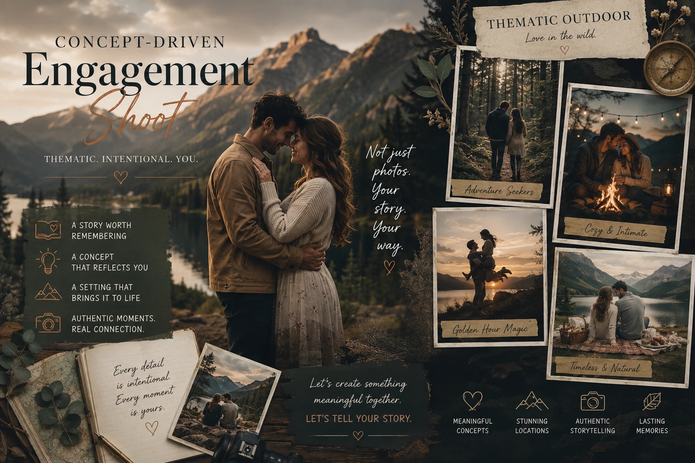
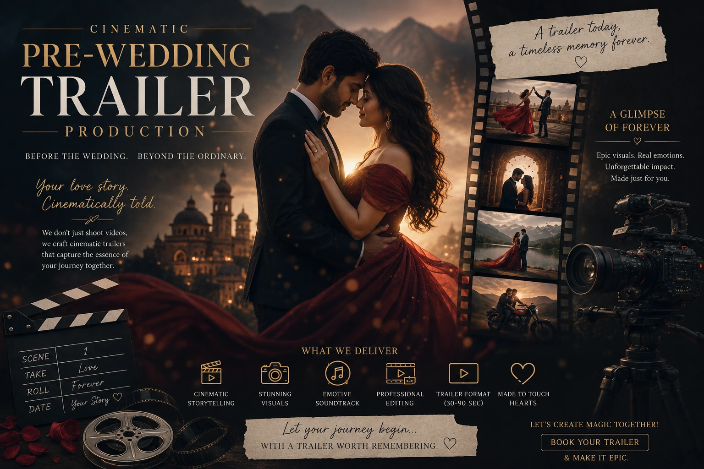

How to Tell Your Love Story Through Conceptual, Story-Driven Media
Why Every Love Story Deserves More Than a Location and a Pose List
Open any wedding photography Instagram account and you will see a version of the same images repeated across hundreds of different couples: the palace steps, the sunset silhouette, the running-through-a-field, the laughing-while-looking-away. These images are beautiful. They are also interchangeable — they could be any couple, at any wedding, in any city. The couple in the frame is present but not specifically visible. The story of who they are and how they found each other is nowhere in the image.
This is the difference between a pre-wedding shoot and a concept-driven engagement shoot: the former produces beautiful content, the latter produces a specific document of a specific love story. And for Indian couples who are investing in professional engagement photographers for a session that will be shared across social media, displayed in the wedding venue, and kept for the rest of their lives, the distinction is worth understanding before the booking is made.
This guide covers how cinematic pre-wedding concepts, storytelling couples videography, and thematic outdoor shoots work — and how to approach your pre-wedding session as the beginning of a visual story rather than a photogenic afternoon.
The Foundation: Finding the Concept in the Couple's Story
Every cinematic pre-wedding concept begins with a conversation — not about locations, not about wardrobe, not about poses — but about the couple. The most visually distinctive and emotionally resonant pre-wedding shoots are built on specific details of the couple's relationship that only they know: the place they first met, the thing they both love that they have never told anyone is actually important to them, the moment they knew, the thing they do together that is entirely their own.
These specifics are the raw material of a concept. A couple who met at a train station and spent their courtship commuting between two cities has a concept available to them that no generic pre-wedding location can provide — and that no other couple's images will ever replicate. A couple who share a love of old Tamil cinema has a visual world available to them — the architecture, the colour palette, the cinematographic references of that era — that is both visually distinctive and specifically theirs.
The concept development conversation that engagement photographers who specialise in story-driven media have with their couples before any creative decision is made:
- How did you meet? Not the Instagram version — the specific detail. Where were you? What time of day? What were you each doing when the moment happened? The specificity of the memory is the material for the concept.
- What do you do together that you would not do alone? The activities, habits, rituals that belong to the relationship rather than to either person individually. These are the behaviours that, when photographed naturally rather than performed for the camera, produce the most authentic and emotionally true images of a couple.
- What place has mattered to your relationship? Not the most photogenic place — the most meaningful one. The café, the road, the beach, the neighbourhood, the city where something important happened between you. Meaning in a location is visible in the couple's relationship to it in a way that a beautiful-but-neutral location is not.
- What visual world feels like your relationship? This is the most abstract question — and the most creative one. Some couples immediately identify a colour palette, a period of cinema, a type of landscape, or an aesthetic register that resonates. Others need prompting: "Does your relationship feel more like old Tamil films or contemporary minimalism? More like the coast or the hills? More intimate and close or expansive and sweeping?" The answer shapes the visual treatment of the entire session.

Cinematic Pre-Wedding Concepts: Five Approaches That Work for Indian Couples
Cinematic pre-wedding concepts for Indian couples draw on an extraordinary range of visual worlds — Tamil Nadu's heritage architecture, the coastal landscape of the South, the agricultural beauty of the Tamil heartland, the specific visual language of Indian cinema, and the personal geographies of each couple's relationship. Here are five concept approaches that consistently produce distinctive, story-specific pre-wedding content:
- The Heritage Architecture Narrative. For couples with a connection to Tamil Nadu's extraordinary temple architecture and heritage streets — Madurai's Meenakshi Amman Temple complex, the painted haveli streets of Karaikudi, the colonial architecture of Pondicherry — a heritage location shoot treats the architecture not as a backdrop but as a narrative environment. The couple moves through the space as if they inhabit it — not as tourists posing against it. The visual treatment borrows from documentary and street photography: available light, natural framing, specific architectural details that create a sense of place rather than a sense of spectacle.
- The Domestic Intimacy Concept. For couples whose relationship is characterised by deep domestic comfort — who are most themselves in the spaces they share — a concept built around their home, their morning routine, their cooking, their reading, their specific private rituals produces images and film of extraordinary emotional authenticity. These are not "lifestyle" images in the generic sense — they are documentary images of a specific couple's specific life together, and they produce the most intimate pre-wedding content available.
- The Landscape as Metaphor Concept. For couples with a specific connection to a natural landscape — the Palni Hills, the Kovalam coast, the paddy fields of the Cauvery delta — the landscape itself becomes the visual language of the relationship. The cinematographic approach treats the couple as small within the landscape, emphasising scale and solitude, or as intimate within it, emphasising belonging and familiarity. The mood is determined by what the landscape means to the couple — not by what it looks like on a search for "best pre-wedding locations."
- The Cinema Reference Concept. For couples with a deep shared love of Tamil or Indian cinema — and specifically for couples who share a favourite film or director whose visual language resonates with their relationship — a concept built around cinematographic references from that body of work produces content that is both visually distinctive and personally meaningful. The colour palette, the shooting style, the wardrobe choices, the location selection all draw from the visual world of the referenced film — producing a pre-wedding shoot that is legible as a creative homage to the couple's shared cultural language.
- The Day in the Life Concept. For couples who resist the artificiality of a formal pre-wedding shoot — who feel most natural in their everyday context and most uncomfortable in posed photographic situations — a documentary day-in-the-life concept follows the couple through a specific day: the morning, the commute, the lunch, the evening. The photographer and videographer are present but not directing — observing and capturing rather than staging and shooting. The resulting images and film are the closest a pre-wedding production can get to actual life, and for the right couple, they are the most emotionally true content available.
Storytelling Couples Videography: The Moving Image Layer
Storytelling couples videography for a pre-wedding or engagement session operates on a fundamentally different philosophy from standard pre-wedding video production. Standard pre-wedding video captures the couple looking beautiful in front of beautiful locations. Storytelling couples videography captures the couple being themselves — and uses the visual and editorial tools of cinema to make that truth emotionally compelling for a viewer who does not know them.
The specific approaches that separate storytelling videography from standard coverage:
Audio as Narrative Spine
The most powerful pre-wedding films are built around what the couple says to each other — not what they look like saying nothing. A filmmaker who captures the couple's unscripted conversation, their laughter, their private jokes, and their genuine exchanges and uses this audio as the spine of the edit produces film that is irreplaceably specific to this couple.
Observational Coverage
Alongside directed footage, a storytelling couples videography approach includes significant observational coverage — filming the couple when they are not looking at the camera, when they have forgotten the crew is present, when they are simply being together. These frames are the most authentic in the entire film.
Location as Character
The location in a story-driven pre-wedding film is not a setting — it is a character. The establishing shots, the environmental detail, the atmosphere of the place are captured with the same care as the couple footage, because the relationship between the couple and the location is part of the story being told.
Editorial Narrative Structure
A story-driven pre-wedding film has an arc: a beginning that establishes who the couple is and where they are, a middle that deepens the emotional register through intimacy and environment, and an ending that feels like a resolution — an exhale, a laugh, a look — rather than a stop. This structure requires editorial intention, not just beautiful footage assembled to music.
Cinematic Pre-Wedding Trailers: The Most Shared Pre-Wedding Content Format
The cinematic pre-wedding trailer is the content format that most Indian couples share in the weeks before their wedding — across Instagram, WhatsApp, and YouTube — as a public announcement of their upcoming celebration and an introduction of their relationship to their wider community. It is, for many couples, the first piece of professional visual media that the world sees of them as a couple.
What separates a cinematic pre-wedding trailer that is shared thousands of times from one that is watched by family and forgotten:
- A specific emotional hook in the first ten seconds. A trailer that opens with a wide establishing shot of a beautiful location earns a passive view. A trailer that opens with a specific piece of audio — a laugh, a spoken word, an exchange that is clearly between two people who genuinely love each other — earns a watch and a share. The emotional hook is more important than the visual quality of the opening frame.
- Music that serves the couple, not the algorithm. The music selection for a cinematic pre-wedding trailer should be chosen for its emotional fit with the specific couple's relationship dynamic, not for its current trending status on Reels. A piece of music that is genuinely right for the couple produces a more emotionally resonant film than a trending track applied to footage it does not match.
- A pacing that builds and releases. The best pre-wedding trailers have a pacing arc — quiet and intimate in the opening, building through mid-section, releasing into joy or beauty at the end. Trailers that maintain the same energy level throughout — whether consistently fast or consistently slow — lose the emotional contrast that makes the climax feel earned.
- At least one moment of genuine unscripted authenticity. One frame, one sound, one moment that could only have happened on this specific day with this specific couple — something unplanned, unrepeatable, genuine — is the frame that makes the viewer feel they have witnessed something real. It is also the frame most often cited when people share the trailer: "Did you see the moment where..."

Thematic Outdoor Shoots: Location as Visual Language
Thematic outdoor shoots for Indian couples are not about finding the most Instagrammable location. They are about finding the location that most truthfully communicates the visual world of the concept — and then shooting it with the specific cinematographic approach that the concept demands.
The framework for choosing a location for a thematic outdoor shoot:
- Meaning over aesthetics. A location that is meaningful to the couple — even if it is not conventionally photogenic — will always produce more emotionally resonant images than a beautiful-but-neutral location chosen for its visual qualities alone. The couple's relationship to a place is visible in how they inhabit it.
- Light over location. The quality of light at a location is more important than the location itself. A modest location in extraordinary golden hour light produces more beautiful images than a spectacular location in harsh midday sun. Location selection for thematic outdoor shoots always considers the lighting conditions at the time of day when the shoot is planned.
- Scale matched to concept. An intimate, domestic concept requires an intimate scale — tight spaces, human-scale architecture, close framing. An epic, landscape-driven concept requires scale — open horizons, wide compositions, the couple small within an expansive environment. Matching the compositional scale of the shoot to the emotional register of the concept is a fundamental creative decision.
- Exclusivity and access. The most distinctive thematic outdoor shoots use locations that require advance planning, local relationships, or specific timing to access. A temple at dawn before the crowds arrive, a heritage house with arranged access, a private garden or farmland with the owner's permission — these locations produce images that look different from the standard catalogue of publicly accessible pre-wedding locations because they are genuinely different.
Lifestyle Engagement Photography Near Me: What to Look for Locally
Couples searching for lifestyle engagement photography near me who want story-driven, concept-led content rather than a standard pose-at-a-location session should evaluate photographers on the following criteria:
- A portfolio that shows narrative consistency across a full session. Not just twelve beautiful standalone images — a sequenced gallery that reveals a story, a location, a couple's specific dynamic, and a consistent visual treatment from first to last frame.
- Evidence of pre-shoot creative development. A storytelling photographer will be able to describe their concept development process — how they move from an initial conversation with a couple to a specific creative brief. If the first question a photographer asks is "what locations are you considering?" rather than "tell me about how you met," they are not a concept-driven storytelling photographer.
- Versatility across visual registers. A photographer who can work in heritage architectural spaces, natural landscapes, domestic environments, and urban contexts — and whose portfolio demonstrates genuine competence in all of these — has the creative range to match the concept to the couple rather than fitting the couple to their preferred location.
- Video capability alongside photography. For couples who want creative wedding teaser media alongside still photography, confirm that the engagement photographer works with a videographer whose aesthetic is consistent with theirs — or offers integrated photo-video production within the same creative concept.
Creative Wedding Teaser Media: Building Anticipation Before the Big Day
Creative wedding teaser media — the content released in the weeks and days before the wedding — serves a commercial and emotional purpose that is frequently underestimated by couples and overestimated by studios whose primary interest is in using their clients' content for their own portfolio.
For the couple, creative wedding teaser media does three things that matter:
- It builds genuine anticipation among guests. A beautifully produced pre-wedding trailer released two weeks before the wedding gives guests who are already emotionally invested in the couple a reason to feel the anticipation building — and gives the couple a way to communicate something true about their relationship to a wider audience before the day itself.
- It establishes the visual language of the wedding. A pre-wedding trailer that shares the aesthetic world of the upcoming wedding — the colour palette, the emotional register, the visual style — creates a coherent visual narrative from pre-wedding through to the wedding day itself, which the couple and their guests experience as a continuous story rather than disconnected events.
- It is the couple's first significant piece of shared public media. For many Indian couples, the pre-wedding trailer is the first piece of professionally produced visual content that communicates who they are as a couple to the world. It should feel like them — their specific personality, their specific dynamic, their specific story — rather than a generic beautiful couple in a beautiful location.
Conclusion
Every love story is specific. Every couple has a visual world available to them — built from the places that mattered, the things they do together, the way they look at each other when they think no one is watching — that is entirely their own. The role of engagement photographers who specialise in cinematic pre-wedding concepts and storytelling couples videography is to find that world, build a concept around it, and produce the images and film that make it visible to everyone who will watch and keep them for the rest of their lives.
A concept-driven engagement shoot is not harder to produce than a standard pre-wedding session. It requires a different kind of preparation — more conversation, more creative development, more specific location scouting — and a different kind of attention on the day. But the images and film it produces are unmistakably different from the generic beautiful content that fills pre-wedding feeds across India — and they are the images that couples return to most, share most, and value most in the decades after the wedding is over.
At The PhD Ads, we produce cinematic pre-wedding concepts, concept-driven engagement shoots, storytelling couples videography, and creative wedding teaser media for couples across Madurai and Tamil Nadu — built around your specific story, shot in the visual world that is specifically yours.
Key Topics
Ready to Tell Your Love Story Through Cinematic Media?
At The PhD Ads, we specialise in concept-driven engagement shoots, cinematic pre-wedding trailers, and storytelling couples videography for couples across Madurai and Tamil Nadu — built around your specific story, not a generic pose list.
Email: team@e2o.in